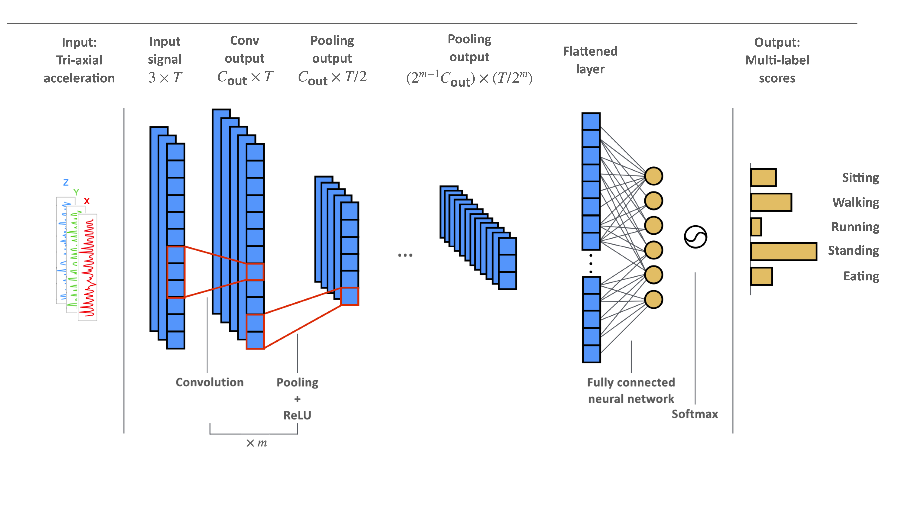
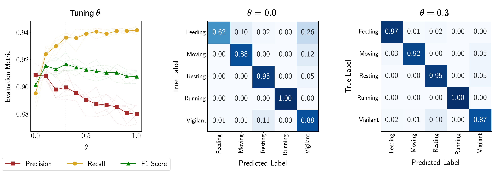

Conformal Prediction to Classify Animal Behaviours with Uncertainty
1University of Washington (Statistics), 2University of Washington (Biology), 3Botswana Predator Conservation
Highlights
- Animal-worn sensors have revolutionised ecology. Accelerometers, which measure changes in acceleration across planes of movement, are increasingly being used to classify animal behaviours across taxa.
- However, classification remains challenging due to the sparsity of labeled data, class imbalance, unquantified uncertainty in model outputs, distribution shift, and noisy signals.
- We introduce an open-source approach, integrating machine learning and statistical inference to mitigate class imbalances, provide uncertainty quantification, and smoothen noisy classifications.
- We evaluate our approach via simulation and highlight its utility using data collected from a free-ranging large carnivore, African wild dogs (Lycaon pictus), in the Okavango Delta, Botswana.
Challenges of Behavior Prediction in Ecology
The utility of accelerometers lies in their ability to capture distinct waveform patterns within raw data that correspond to specific movements or postures. While techniques range from classical classifiers (SVMs, Random Forests) to deep learning (CNNs, Transformers), current applications face several key limitations:
- Sparse and imbalanced labels: Training datasets suffer from sparse labels and unbalanced label distribution.
- Uncertainty quantification: There is a lack of methods for quantifying uncertainty in behaviour classifications.
- Distribution shifts: Model performance often degrades due to shifts in data distribution across different contexts.
- Temporal inconsistency: Models often produce rapidly fluctuating (and ecologically unlikely) classifications for consecutive behaviour segments.
Feature Extraction & Class Rebalancing
We use 1D Convolutional Neural Network (CNN) to extract features from the raw accelerometry data (see schematic below). Our dataset had a high class imbalance, with minority classes - feeding, moving, and running - comprising only 6% of the data. To alleviate this, we employ a flexible class rebalancing approach (parametrized by $\theta$) during training where $\theta = 0.0$ implies no rebalancing and $\theta = 1.0$ implies complete rebalancing.


Left: Our 1D Convolutional Neural Network extracts features from raw tri-axial accelerometer data. Right: Our flexible class rebalancing approach improves recall on Feeding from 0.62 to 0.97.
Citation
@article{agarwal2025leveraging,
title={Leveraging machine learning and accelerometry to classify animal behaviours with uncertainty},
author={Agarwal, Medha and Rafiq, Kasim and Mehta, Ronak and Abrahms, Briana and Harchaoui, Zaid},
booktitle={Methods in Ecology and Evolution (MEE)},
year={2025}
}